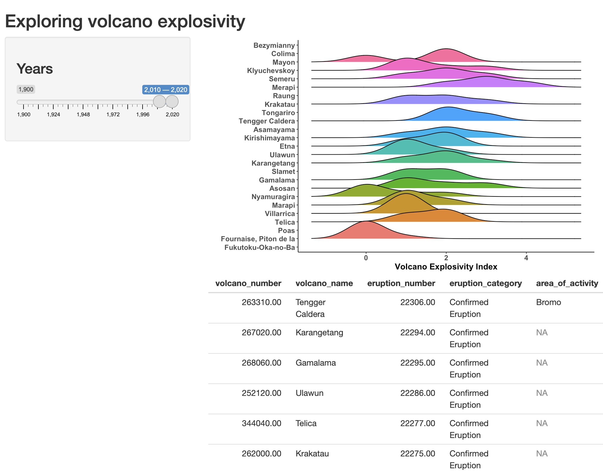
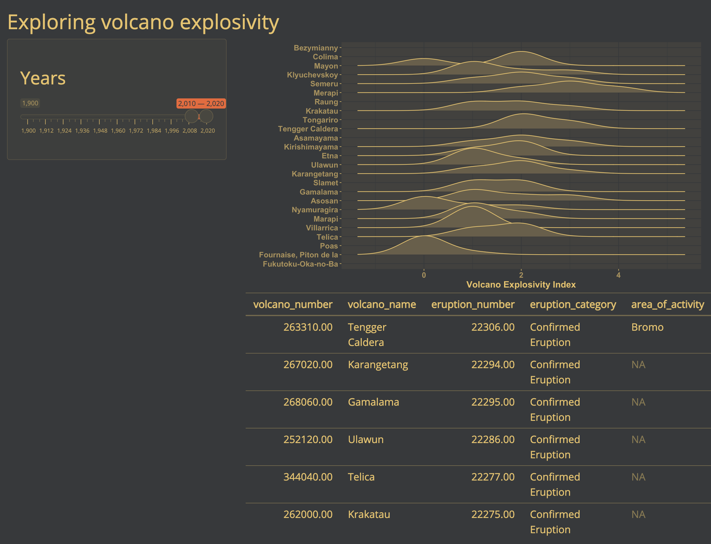

Plots
Shiny is an excellent tool for visual exploration - it is at its most useful when a user can see something change before their eyes according to some selections. This is a great way to allow users to explore a dataset, explore the results of some analyses according to different parameters, and so on!
Let’s now add a plot to our Shiny app, to visualize the distribution of a variable depending on user input. We’ll be adding the ggplot2 and ggridges packages in the set-up step at the top of our app.R to allow us to make a plot.
User interface
To add a plot in our Shiny, we need to indicate where the plot should appear in the app. We can do this with plotOutput(), a similar function to tableOutput() in the previous section that is meant for plot outputs, as the name suggests.
# Define UI for application that makes a table andplots the Volcano Explosivity
# Index for the most eruptive volcanoes within a selected range of years
ui <- fluidPage(
# Application title ----
titlePanel("Exploring volcano explosivity"),
# Input interface ----
sidebarLayout(
sidebarPanel(
# Sidebar with a slider range input
sliderInput("years", # the id your server needs to use the selected value
label = h3("Years"),
min = 1900, max = 2020, # maximum range that can be selected
value = c(2010, 2020) # this is the default slider position
)
)
),
# Show the outputs from the server ---------------
mainPanel(
# Show a ridgeplot of explosivity index for selected volcanoes
plotOutput("ridgePlot"),
# then, show the table we made in the previous step
tableOutput("erupt_table")
)
)
Now our Shiny app knows where we want to place our plot.
Server
We now need to create the plot we want to show in our app. This plot will change depending on one or several reactive values that the user can input or select in our UI.
We link the UI and server together with IDs that are assigned to each object. Above, we told the UI to expect a plot output with the ID "ridgePlot". In the server, we will create a plot and render it as a plot object using renderPlot(), and we will assign this plot output to the ID we call in the UI (as output$ridgePlot).
# Define server logic required to make your output(s)
server <- function(input, output) {
# prepare the data
# ----------------------------------------------------------
# read the dataset
eruptions <- readr::read_rds(here::here("data", "eruptions.rds"))
# filter the dataset to avoid overloading the plot
eruptions <- eruptions[which(eruptions$volcano_name %in% names(which(table(eruptions$volcano_name) > 30))),]
# this subsets to volcanoes that have erupted more than 30 times
# make reactive dataset
# ----------------------------------------------------------
# subset volcano data with input year range
eruptions_filtered <- reactive({
subset(eruptions, start_year >= input$years[1] & end_year <= input$years[2])
})
# create and render the outputs
# ----------------------------------------------------------
# create the table of volcanoes
output$erupt_table <- renderTable({
head(eruptions_filtered())
})
# render the plot output
output$ridgePlot <- renderPlot({
# create the plot
ggplot(data = eruptions_filtered(),
aes(x = vei,
y = volcano_name,
fill = volcano_name)) +
# we are using a ridgeplot geom here, from the ggridges package
geom_density_ridges( size = .5) + # line width
# label the axes
labs(x = "Volcano Explosivity Index", y = "") +
# adjust the ggplot theme to make the plot "prettier"
theme_classic() +
theme(legend.position = "none",
axis.text = element_text(size = 12, face = "bold"),
axis.title = element_text(size = 14, face = "bold"))
})
}
The Shiny app
Now, if we run the Shiny app, we have a plot above the table we made previously. They are positioned in this way because the plotOutput() comes before the tableOutput() in the UI.
# Run the application
shinyApp(ui = ui, server = server)

Review: How a Shiny app works
Building blocks
We’ve now seen the basic building blocks of a Shiny app:
- The user interface, which determines how the app “looks”. This is how we tell Shiny where to ask for user inputs, and where to put any outputs we create.
- Reactive values, which are values that change according to user inputs. These are values that affect the outputs we create in the Shiny app, such as tables or plots.
- The server, where we use reactive values to generate some outputs.
IDs
The user interface and server communicate through IDs that we assign to inputs from the user and outputs from the server.

We use an ID (in orange) to link the user input in the UI to the reactive values used in the server:

We use another ID (in blue) to link the output created in the server to the output shown in the user interface:

Organisation
These elements can all be placed in one script named app.R or separately in scripts named ui.R and server.R. The choice is up to you, although it becomes easier to work in separate ui.R and server.R scripts when the Shiny app becomes more complex.
Example 1: Everything in app.R
 Example 2: Split things into
Example 2: Split things into ui.R and server.R

Customising the theme
If you’d like to go one step further, you can also customize the appearance of your Shiny app using built-in themes, or creating your own themes.
Using built-in themes
There are several built-in themes in Shiny, which allow you to quickly change the appearance of your app. You can browse a gallery of available themes here here, or test themes out interactively here.
Let’s try the darkly theme on our Shiny app. To do this, we will need the shinythemes package.
We can change the theme of our previous app with one line of code:
# Define UI for application that makes a table andplots the Volcano Explosivity
# Index for the most eruptive volcanoes within a selected range of years
ui <- fluidPage(
# Application title ----
titlePanel("Exploring volcano explosivity"),
# Input interface ----
sidebarLayout(
sidebarPanel(
# Sidebar with a slider range input
sliderInput("years", # the id your server needs to use the selected value
label = h3("Years"),
min = 1900, max = 2020, # maximum range that can be selected
value = c(2010, 2020) # this is the default slider position
)
)
),
# Show the outputs from the server ---------------
mainPanel(
# Show a ridgeplot of explosivity index for selected volcanoes
plotOutput("ridgePlot"),
# then, show the table we made in the previous step
tableOutput("erupt_table")
),
# Customize the theme ----------------------
# Use the darkly theme
theme = shinythemes::shinytheme("darkly")
)
Now, if we run the app, it looks a little different:

Using a custom theme
You can also go beyond the built-in themes, and create your own custom theme with the fonts and colours of your choice. You can also apply this theme to the outputs rendered in the app, to bring all the visuals together for a more cohesive look.
Customizing a theme
To create a custom theme, we will be using the bs_theme() function from the bslib package.
# Create a custom theme
cute_theme <- bslib::bs_theme(
bg = "#36393B", # background colour
fg = "#FFD166", # most of the text on your app
primary = "#F26430", # buttons, ...
# you can also choose fonts
base_font = font_google("Open Sans"),
heading_font = font_google("Open Sans")
)
To apply this theme to our Shiny app (and the outputs), we will be using the thematic package.
There are two essential steps to apply a custom theme to a Shiny app:
- Activating thematic.
- Setting the user interface’s theme to the custom theme (
cute_theme).
# Activate thematic
# so your R outputs will be changed to match up with your chosen styling
thematic::thematic_shiny()
# Define UI for application that makes a table andplots the Volcano Explosivity
# Index for the most eruptive volcanoes within a selected range of years
ui <- fluidPage(
# Application title ----
titlePanel("Exploring volcano explosivity"),
# Input interface ----
sidebarLayout(
sidebarPanel(
# Sidebar with a slider range input
sliderInput("years", # the id your server needs to use the selected value
label = h3("Years"),
min = 1900, max = 2020, # maximum range that can be selected
value = c(2010, 2020) # this is the default slider position
)
)
),
# Show the outputs from the server ---------------
mainPanel(
# Show a ridgeplot of explosivity index for selected volcanoes
plotOutput("ridgePlot"),
# then, show the table we made in the previous step
tableOutput("erupt_table")
),
# Customize the theme ----------------------
# Use our custom theme
theme = cute_theme
)
Now, if we run the app, the user interface and plot theme is set to the colours and fonts we set in cute_theme:

Here, thematic is not changing the colours used to represent a variable in our plot, because this is an informative colour scale (unlike the colour of axis labels, lines, and the plot background). However, if we remove this colour variable in our ridgeplot in the server, thematic will change the plot colours as well. Here is a simplified example of our server to see what these changes would look like:
# Define server logic required to make your output(s)
server <- function(input, output) {
#... (all the good stuff we wrote above)
# render the plot output
output$ridgePlot <- renderPlot({
# create the plot
ggplot(data = eruptions_filtered(),
aes(x = vei,
y = volcano_name)) + # we are no longer setting
# the fill argument to a variable
# we are using a ridgeplot geom here, from the ggridges package
geom_density_ridges(size = .5) +
# label the axes
labs(x = "Volcano Explosivity Index", y = "") +
# remove the "classic" ggplot2 so it doesn't override thematic's changes
# theme_classic() +
theme(legend.position = "none",
axis.text = element_text(size = 12, face = "bold"),
axis.title = element_text(size = 14, face = "bold"))
})
}
Now, our plot’s theme follows the app’s custom theme as well:

Constructing an App
Taking advantage of good defaults
Here, we will use shiny extension shinyDashboards and leaflet to construct a custom Shiny App to map volcanoes of the world. First, we need a few additional packages.
Note: All Source code for this app can be found here on the BIOS2 Github.
Using ShinyDashboard
We will create our app using defaults from the ShinyDashboard package, which always includes three main components: a header, using dashboardHeader(), a sidebar, using dashboardSidebar(), and a body, using dashboardBody(). These are then added together using the dashboardPage() function.
Building these elements is less like usual R coding, and more like web design, since we are, in fact, designing a unser interface for a web app. Here, we’ll make a basic layout before populating it.
# create the header of our app
header <- dashboardHeader(
title = "Exploring Volcanoes of the World",
titleWidth = 350 # since we have a long title, we need to extend width element in pixels
)
# create dashboard body - this is the major UI element
body <- dashboardBody(
# make first row of elements (actually, this will be the only row)
fluidRow(
# make first column, 25% of page - width = 3 of 12 columns
column(width = 3,
# Box 1: text explaining what this app is
#-----------------------------------------------
box( width = NULL,
status="primary", # this line can change the automatic color of the box.
title = NULL,
p("here, we'll include some info about this app")
), # end box 1
# box 2 : input for selecting volcano type
#-----------------------------------------------
box(width = NULL, status = "primary",
title = "Selection Criteria", solidHeader = T,
p("here, we'll add a UI element for selecting volcano types"),
), # end box 2
# box 3: ggplot of selected volcanoes by continent
#------------------------------------------------
box(width = NULL, status = "primary",
solidHeader = TRUE, collapsible = T,
title = "Volcanoes by Continent",
p("here, we'll add a bar plot of volcanoes in each continent")
) # end box 3
), # end column 1
# second column - 75% of page (9 of 12 columns)
#--------------------------------------------------
column(width = 9,
# Box 4: leaflet map
box(width = NULL, background = "light-blue", height = 850,
p("here, we'll show volcanoes on a map"),
) # end box with map
) # end second column
) # end fluidrow
) # end body
# add elements together
dashboardPage(
skin = "blue",
header = header,
sidebar = dashboardSidebar(disable = TRUE), # here, we only have one tab of our app, so we don't need a sidebar
body = body
)

Populating the Layout
Now, we are going to fill out app with elements. In this app, we will only have one user input: a selection of the volcano type to show. We will use this input (input$volcano_type), which will be used to filter data in the server (i.e. make a smaller dataset using only volcanoes of the selected types), then use this filtered dataset to create output elements (plots and maps).
Below, we show the necessary code to include in both the UI and the Server to create each plot element. Notice that after the reactive value selected_volcanoes is created in the selection box, this is the only object that is used to create the other elements in the app.
| Location | Element | UI | Server |
|---|---|---|---|
| Box 1 | Intro Textbox | Markdown/HTML text code | |
| Box 2 | Selection Wigets | checkboxGroupButtons( inputID = "volcano_type") |
selected_volcanoes <- reactive({ volcano_df %>% filter(type %in% input$volcano_type)}) to create a filtered dataset that will react to user input |
| Box 3 | Bar Graph | plotOutput("bargraph") |
output$continentplot <- renderPlot(...)) which will plot from the selectied_volcanoes reactive object |
| Box 4 | Leaflet Map | leafletOutput("volcanomap") |
output$volcanomap <- renderLeaflet(...) to map points from the selectied_volcanoes reactive object |

Challenge!
Use the code provided to add your own additional user input to the Shiny App. The code (which you can access here leaves a space for an additional UI input inside box 2). Then, you’ll need to use your new input element to the reactive value in the Server, as noted in the server code.
Use the Default Shiny Widgets or shinyWidgets extended package galleries to explore the types of elements you can add.

See our completed app HERE
Why do you want to use Shiny?
There are many reasons to consider using Shiny for a project:
- sharing results from a paper with your readers
- helping you explore a model, mathematics, simulations
- letting non R users use R.
Hello Shiny
# Define UI for app that draws a histogram ----
ui <- fluidPage(
# App title ----
titlePanel("Hello Shiny!"),
# Sidebar layout with input and output definitions ----
sidebarLayout(
# Sidebar panel for inputs ----
sidebarPanel(
# Input: Slider for the number of bins ----
sliderInput(inputId = "bins",
label = "Number of bins:",
min = 1,
max = 50,
value = 30)
),
# Main panel for displaying outputs ----
mainPanel(
# Output: Histogram ----
plotOutput(outputId = "distPlot")
)
)
)
Golem
First step is creating your own golem project:

golem provides you with some very helpful “workflow” scripts:
Edit the Description by filling in this function in 01_dev.R
Then, add all the dependencies
Together, this edits the DESCRIPTION of your R package to look something like this:
Now we can start building the app.
app_ui <- function(request) {
tagList(
# Leave this function for adding external resources
golem_add_external_resources(),
# Your application UI logic
shinydashboard::dashboardPage(
header = shinydashboard::dashboardHeader(
title = "Exploring Volcanoes of the World",
titleWidth = 350 # since we have a long title, we need to extend width element in pixels
),
sidebar = shinydashboard::dashboardSidebar(disable = TRUE), # here, we only have one tab, so we don't need a sidebar
body = shinydashboard::dashboardBody(
# make first row of elements (actually, this will be the only row)
fluidRow(
# make first column, 25% of page - width = 3 of 12 colums
column(width = 3,
# box 1 : input for selecting volcano type
#-----------------------------------------------
shinydashboard::box(width = NULL, status = "primary",
title = "Selection Criteria", solidHeader = T
## CHECKBOX HERE
), # end box 1
# box 2: ggplot of selected volcanoes by continent
#------------------------------------------------
shinydashboard::box(width = NULL, status = "primary",
solidHeader = TRUE, collapsible = T,
title = "Volcanoes by Continent"
## PLOT HERE
) # end box 2
), # end column 1
# second column - 75% of page (9 of 12 columns)
column(width = 9,
# Box 3: leaflet map
shinydashboard::box(width = NULL, background = "light-blue"
## MAP HERE
) # end box with map
) # end second column
) # end fluidrow
) # end body
)
)
}
This indicates where each of the three components of the app would go.
At this point we can run the app to get a very empty-looking UI:

Golem modules
We could split this app into three different sections, corresponding to each of the three boxes:
- Filter the type of volcano we see
- take the filtered volcanoes and plot a stacked bar chart
- take the filtered volcanoes and plot a map
Selecting the volcanoes
#' volcano_select UI Function
#'
#' @description A shiny Module.
#'
#' @param id,input,output,session Internal parameters for {shiny}.
#'
#' @noRd
#'
#' @importFrom shiny NS tagList
mod_volcano_select_ui <- function(id){
ns <- NS(id)
tagList(
# Widget specifying the species to be included on the plot
shinyWidgets::checkboxGroupButtons(
inputId = ns("volcano_type"),
label = "Volcano Type",
choices = c("Stratovolcano" , "Shield" ,"Cone" , "Caldera" , "Volcanic Field",
"Complex" , "Other", "Lava Dome" , "Submarine" ),
checkIcon = list(
yes = tags$i(class = "fa fa-check-square",
style = "color: steelblue"),
no = tags$i(class = "fa fa-square-o",
style = "color: steelblue"))
) # end checkboxGroupButtons
)
}
#' volcano_select Server Functions
#'
#' @noRd
mod_volcano_select_server <- function(id, volcano){
moduleServer( id, function(input, output, session){
ns <- session$ns
# make reactive dataset
# ------------------------------------------------
# Make a subset of the data as a reactive value
# this subset pulls volcano rows only in the selected types of volcano
selected_volcanoes <- reactive({
req(input$volcano_type)
volcano %>%
# select only volcanoes in the selected volcano type (by checkboxes in the UI)
dplyr::filter(volcano_type_consolidated %in% input$volcano_type) %>%
# Space to add your suggested filter here!!
# --- --- --- --- --- --- --- --- --- --- --- --- ---
# filter() %>%
# --- --- --- --- --- --- --- --- --- --- --- --- ---
# change volcano type into factor (this makes plotting it more consistent)
dplyr::mutate(volcano_type_consolidated = factor(volcano_type_consolidated,
levels = c("Stratovolcano" , "Shield", "Cone", "Caldera", "Volcanic Field",
"Complex" , "Other" , "Lava Dome" , "Submarine" ) ) )
})
})
}
## To be copied in the UI
# mod_volcano_select_ui("volcano_select_1")
## To be copied in the server
# mod_volcano_select_server("volcano_select_1")
I also like to test my modules by using them to create a toy Shiny app. The best place to do this is by using a testthat directory. This is another great advantage of using a package workflow. You can set this up easily with usethis::use_test(): just run usethis::use_test from the R console when you have the module open.
Then write a simple test like this
test_that("volcano selection module works", {
testthat::skip_if_not(interactive())
ui <- fluidPage(
## To be copied in the UI
mod_volcano_select_ui("volcano_select_1"),
tableOutput("table")
)
server <- function(input, output) {
## To be copied in the server
volcano_data <- readRDS("data/volcanoes.rds")
selected_data <- mod_volcano_select_server("volcano_select_1",
volcano = volcano_data)
output$table <- renderTable(selected_data())
}
shinyApp(ui = ui, server = server)
})
Which generates the following simple app:

Barplot of continents
#' continentplot UI Function
#'
#' @description A shiny Module.
#'
#' @param id,input,output,session Internal parameters for {shiny}.
#'
#' @noRd
#'
#' @importFrom shiny NS tagList
mod_continentplot_ui <- function(id){
ns <- NS(id)
tagList(
plotOutput(ns("barplot"), # this calls to object continentplot that is made in the server page
height = 350)
)
}
#' continentplot Server Functions
#'
#' @noRd
mod_continentplot_server <- function(id, volcano, selected_volcanoes){
# kind of helpful
stopifnot(is.reactive(selected_volcanoes))
moduleServer( id, function(input, output, session){
ns <- session$ns
output$barplot <- renderPlot({
# create basic barplot
barplot <- ggplot2::ggplot(data = volcano,
ggplot2::aes(x=continent,
fill = volcano_type_consolidated))+
# update theme and axis labels:
ggplot2::theme_bw()+
ggplot2::theme(plot.background = ggplot2::element_rect(color="transparent",fill = "transparent"),
panel.background = ggplot2::element_rect(color="transparent",fill="transparent"),
panel.border = ggplot2::element_rect(color="transparent",fill="transparent"))+
ggplot2::labs(x=NULL, y=NULL, title = NULL) +
ggplot2::theme(axis.text.x = ggplot2::element_text(angle=45,hjust=1))
# IF a selected_volcanoes() object exists, update the blank ggplot.
# basically this makes it not mess up when nothing is selected
barplot <- barplot +
ggplot2::geom_bar(data = selected_volcanoes(), show.legend = F) +
ggplot2::scale_fill_manual(values = RColorBrewer::brewer.pal(9,"Set1"), drop=F) +
ggplot2::scale_x_discrete(drop=F)
# print the plot
barplot
}) # end renderplot command
})
}
## To be copied in the UI
# mod_continentplot_ui("continentplot_1")
## To be copied in the server
# mod_continentplot_server("continentplot_1")
the test
test_that("volano barplot works", {
testthat::skip_if_not(interactive())
ui <- fluidPage(
## To be copied in the UI
mod_continentplot_ui("continentplot_1"),
tableOutput("table")
)
server <- function(input, output) {
## To be copied in the server
volcano_data <- readRDS("data/volcanoes.rds")
volcano_recent <- subset(volcano_data, last_eruption_year > 2000)
mod_continentplot_server("continentplot_1",
volcano = volcano_data,
selected_volcanoes = reactive(volcano_recent))
}
shinyApp(ui = ui, server = server)
})